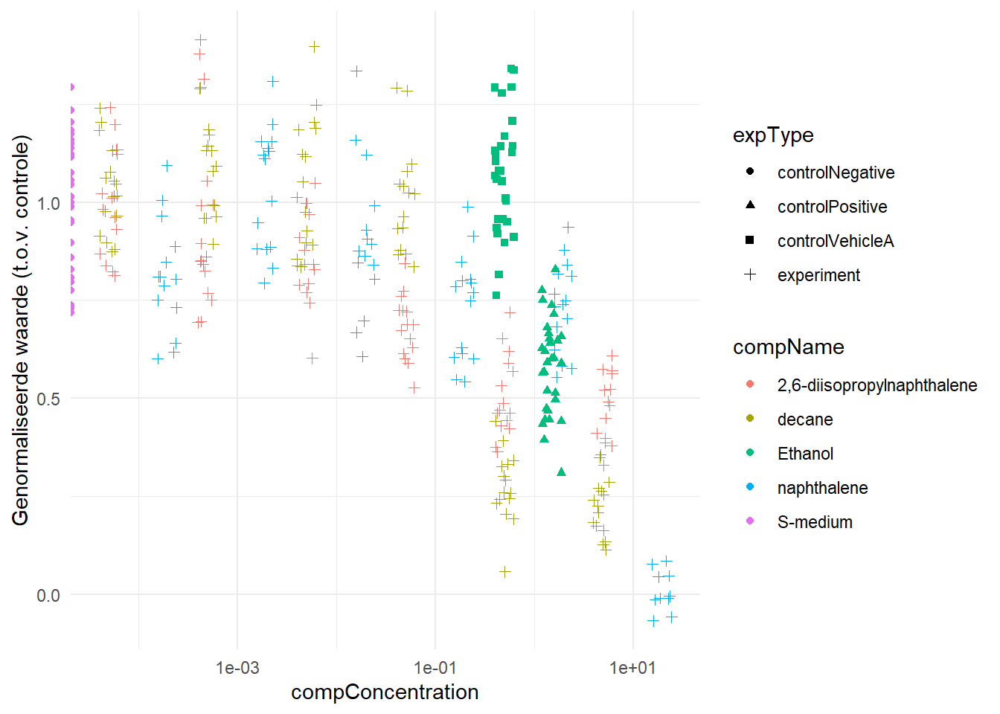

5 Reproducible
library(readxl)
df <- read_xlsx("Reproducible/CE.LIQ.FLOW.062_Tidydata.xlsx")
sapply(df[c("RawData", "compName", "compConcentration")], typeof)## RawData compName compConcentration
## "double" "character" "character"compConcentration hoort geen character te zijn. concentraties zijn getallen.
Om een grafiek te maken veranderen we de compConcentration eerst in een getal
graph <- df[, c("compName", "compConcentration", "RawData", "expType")]
#Eerst compConcentration veranderen naar numeric.
graph$compConcentration <- as.numeric(graph$compConcentration)## Warning: NAs introduced by coercion#Een waarde wordt geteld als NA, dit kwam omdat een waarde met , was opgegeven.
#Dit veranderen we met deze command gelijk voor de hele column
graph$compConcentration <- gsub(",", ".", graph$compConcentration)
#Nu kan de column verandert worden tot numeric
graph$compConcentration <- as.numeric(graph$compConcentration)
graph## # A tibble: 360 × 4
## compName compConcentration RawData expType
## <chr> <dbl> <dbl> <chr>
## 1 2,6-diisopropylnaphthalene 4.99 44 experiment
## 2 2,6-diisopropylnaphthalene 4.99 37 experiment
## 3 2,6-diisopropylnaphthalene 4.99 45 experiment
## 4 2,6-diisopropylnaphthalene 4.99 47 experiment
## 5 2,6-diisopropylnaphthalene 4.99 41 experiment
## 6 2,6-diisopropylnaphthalene 4.99 35 experiment
## 7 2,6-diisopropylnaphthalene 4.99 41 experiment
## 8 2,6-diisopropylnaphthalene 4.99 36 experiment
## 9 2,6-diisopropylnaphthalene 4.99 40 experiment
## 10 2,6-diisopropylnaphthalene 4.99 38 experiment
## # ℹ 350 more rowslibrary(ggplot2)
library(dplyr)
graph %>% ggplot(aes(x = compConcentration, y = RawData, color = compName, shape = expType)) +
geom_jitter(width = 0.1, height = 0.1) +
scale_x_log10() +
theme_minimal()## Warning in scale_x_log10(): log-10 transformation introduced infinite values.## Warning: Removed 6 rows containing missing values or values outside the scale range
## (`geom_point()`).
library(dplyr)
library(ggplot2)
# Stap 1: Bereken de gemiddelde waarde van de negatieve controle
mean_control_negative <- graph %>%
filter(expType == "controlNegative") %>%
summarise(mean_value = mean(RawData, na.rm = TRUE)) %>%
pull(mean_value)
# Stap 2: Normaliseer de data, zodat de negatieve controle gemiddeld 1 is
graph_normalized <- graph %>%
mutate(normalized_RawData = RawData / mean_control_negative)
# Stap 3: Maak een nieuwe scatter plot met de genormaliseerde waarden
graph_normalized %>%
ggplot(aes(x = compConcentration, y = normalized_RawData, color = compName, shape = expType)) +
geom_jitter(width = 0.1, height = 0.1) +
scale_x_log10() +
theme_minimal() +
labs(y = "Genormaliseerde waarde (t.o.v. controle)")## Warning in scale_x_log10(): log-10 transformation introduced infinite values.## Warning: Removed 6 rows containing missing values or values outside the scale range
## (`geom_point()`).
Er zijn 3 controles gedaan tijdens het onderzoek. De negatieve controle is in dit geval een ‘normale’ situatie waarin de C. elegans kan leven. Deze test is gedaan om te kijken of de C. elegans wel bruikbaar zijn. Er zijn 2 positieve controles uitgevoerd. De verwachting voor de controlPositive was dat er door de ethanol die toegevoegd werd C.elegans doodgaan en het aantal nakomelingen dus daalt. De controlVehicleA is een controle om te onderzoeken of het wel de toegevoegde stof is die effect heeft, of dat het medium waarin de stof wordt opgelost ook invloed heeft. In dit geval kan dus bevestigt worden dat de controlVehicleA juist is. Als de te testen stof niet word toegevoegd zijn het aantal nakomelingen bijna hetzelfde als de controlNegative.
De negatieve controle is gebruikt om de data te normaliseren. Dit is gedaan zodat het makkelijker is om de data te vergelijken met elkaar. Op deze manier kan de data vergeleken worden zonder dat er alleen naar vaste waarden wordt gekeken. Zo wordt gekeken naar de effecten van de stoffen ten opzichten van de normale situatie van C. elegans.
#Chatgpt!!!
# Installeer en laad het pakket
install.packages("drc") # alleen de eerste keer nodig
library(drc)
library(ggplot2)
library(dplyr)
# Filter data voor één stof (bijvoorbeeld 'compoundA')
data_filtered <- graph_normalized %>% filter(compName == "napthalene")
# Pas een log-logistisch model toe
model <- drm(normalized_RawData ~ compConcentration, data = data_filtered, fct = LL.4())
# Toon samenvatting van het model (inclusief EC50)
summary(model)
# Genereer predicties voor de plot
dose_range <- data.frame(compConcentration = exp(seq(log(min(data_filtered$compConcentration)),
log(max(data_filtered$compConcentration)), length.out = 100)))
dose_range$predicted <- predict(model, newdata = dose_range)
# Maak de dose-response plot
ggplot(data_filtered, aes(x = compConcentration, y = normalized_RawData)) +
geom_point() +
geom_line(data = dose_range, aes(x = compConcentration, y = predicted), color = "blue") +
scale_x_log10() +
theme_minimal() +
labs(title = "Dose-response curve", x = "Concentratie (log schaal)", y = "Genormaliseerde respons")